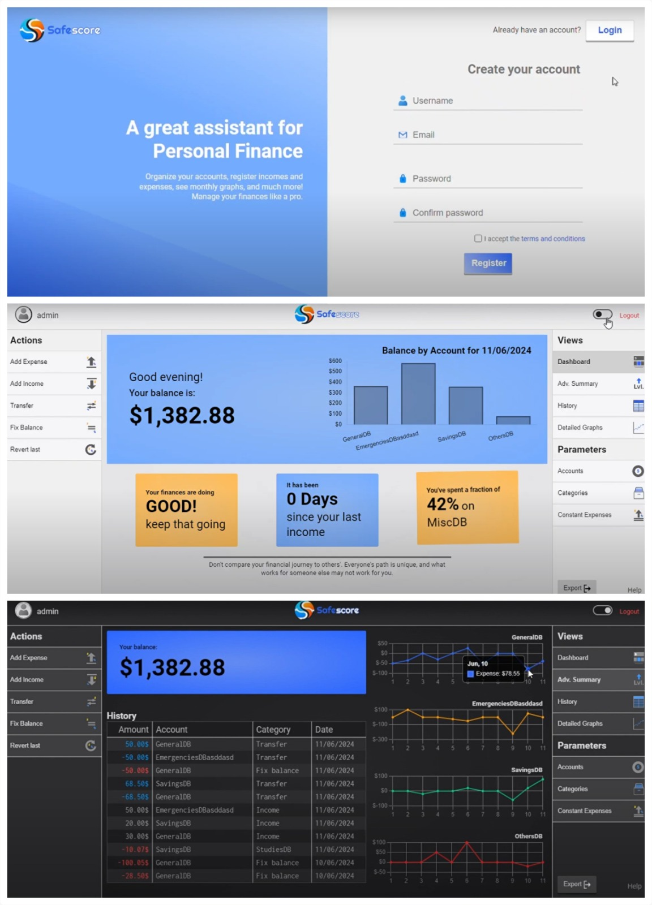
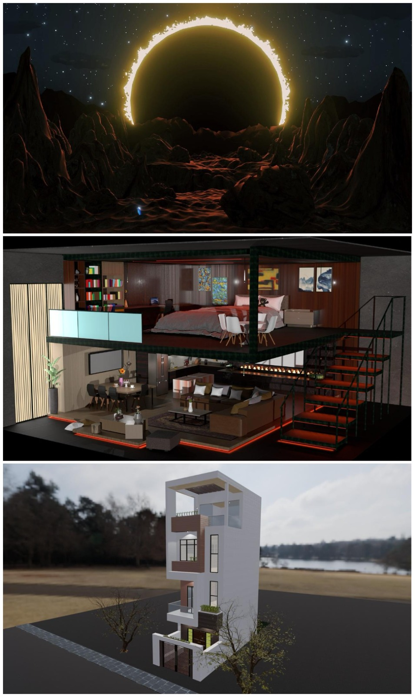

Interactive Dashboard Design
Standardized design of interactive dashboards significantly reduces delivery times, ensures product quality, and facilitates data interpretation. At CID Gallup, I was entrusted with the responsibility of establishing design guidelines and redesigning multiple dashboards for key company clients. Both clients and colleagues expressed a high level of satisfaction with the results of my work.

Process Automation with Python
Automating repetitive processes is essential to increase efficiency in tasks, which is why I constantly apply strategies aimed at automation. A good example of this is the creation of syntax for statistical tables in SPSS. This task used to take about 45 minutes per project at CID Gallup. To optimize it, I developed a Python program that automatically generates the syntax in a dynamic and customizable way, according to the needs of each study. With this solution, the required time was reduced to only 5 minutes per project, which implies an 89% improvement in efficiency.
In addition, I have participated in projects related to the development of LLMs and predictive models. A notable case was the construction of a Python model for the future projection of financial asset prices, using machine learning algorithms such as XGBoost. This model integrated multiple public opinion indicators to accurately capture market dynamics and anticipate possible scenarios.

Executive Report Creation
As a data analyst at CID Gallup, one of my main responsibilities was the preparation of executive reports for various high-profile clients of the organization. These reports were designed to present results in a clear and precise manner, with a strategic approach that provided value in decision-making processes.
Once survey data was collected, I was in charge of processing and preparing the databases. This work included tasks such as record cleaning, variable recoding, and calculation of statistical weights, in order to ensure data quality and representativeness. Subsequently, I developed interactive visualizations in Power BI, designed to facilitate the interpretation of results in an intuitive, attractive, and accessible way.
On a technical level, I considered the architecture of the data models for each report, optimizing relationships and hierarchies to achieve efficient and scalable analysis. Likewise, I implemented DAX expressions to create customized measures and, on some occasions, used HTML elements to enrich the visual presentation of the reports.
Note: image censored for confidentiality reasons.

SafeScore [1]
This project, developed in HTML, CSS, JavaScript, and PHP without the use of frameworks, tested my skills as a UI/UX designer and web developer, by creating a personal finance management tool with real-time visualizations and customization features [1].
The implementation of the base project was limited to a local environment; however, a serverless MVP was deployed using AWS services such as Amplify, DynamoDB, API Gateway, IAM, and Cognito.

Website for Rotaract Club of Panama [1]
As a member of the Rotaract Club of Panama since 2022, I committed to creating and managing the club’s official website. This platform has served as a space to publish the volunteer activities we carry out, as well as a channel to provide visibility and prestige to the non-profit organization.

Virtual Reality for Education [1] [2] [3]
"Virtual Reality for Cultural Enhancement" [1] and "Transforming Education in Panama: Virtual Reality as an Inclusive Tool" [2] are research projects focused on the development and validation of virtual reality platforms applied to education. Together with my colleagues Carlos Rodríguez and Oscar Pérez, we worked under the premise that virtual reality has the potential to revolutionize current teaching methods. With this goal, we developed virtual environments for museums and interactive classrooms, conducting tests with university students and teachers.
Both projects were presented at the National Scientific Initiation Conference organized by SENACYT, where they reached the finalist stage in 2024. Along with this, we had the opportunity to participate in the International Book Fair, representing the Faculty of Computer Science and Engineering at UTP [3], as well as many other events where we showcased our initiative.

3D Modeling with Blender
These are some of my projects in Blender, a tool for 3D modeling, animations, and more. In them, I use different modeling techniques such as lighting, texturing, HDRI, among others, to create fantasy scenarios or recreate real-life objects. In some projects, I use animations to bring my creations to life.

Digital Literacy [1] [2] [3]
For more than a year, I was part of a digital literacy project aimed at older adults, whose pilot plan was carried out in the Betania community, Panama. Weekly sessions were held where I taught skills on the use of technology, both in everyday life and in the professional field [1].
This experience allowed me to deeply understand the causes of digital exclusion among older adults, as well as to identify the main challenges associated with designing digital applications.
I also had the opportunity to share my experience at the Ibero-American Silver Economy Forum, held at the Latin American Parliament and broadcast in three languages through digital channels [2].
In addition, I actively participated in the drafting of a scientific publication presented at the International Conference on Education, Research and Innovation (ICERI) [3].